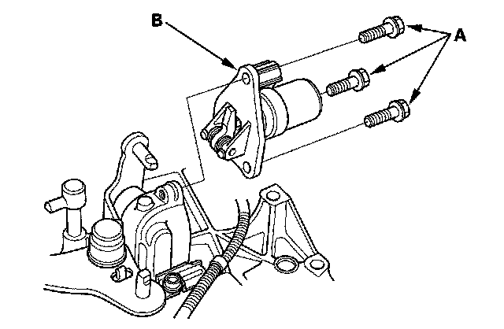
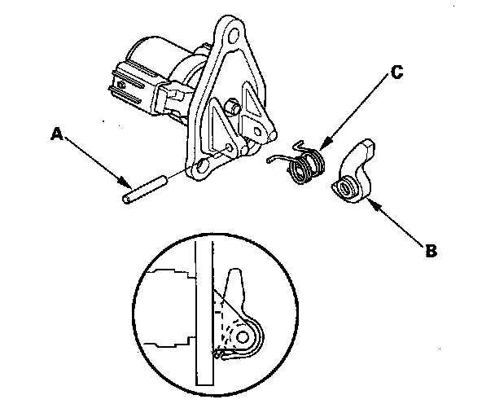
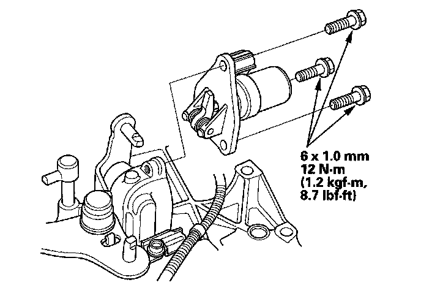

Gear Lockout Solenoid: Service and Repair
Reverse Lockout Solenoid Disassembly/Reassembly1. Make sure you have the anti-theft code for the audio and the navigation system, then write down the audio presets.
2. Disconnect the negative cable from the battery, then disconnect the positive cable.
3. Remove the battery.
4. Remove the air cleaner assembly.
5. Remove the battery base.
6. Disconnect the output shaft (countershaft) speed sensor connector, back-up light switch connector, and reverse lockout solenoid connector.
7. Carefully remove the shift cables, and cable bracket together to avoid bending the shift cables.
8. Remove the three bolts (A) and reverse lockout solenoid (B).

9. Remove the roller (A), the select lock return spring (C), and select lock cam B.

10. Install the components in the reverse order of removal.
11. Clean any dirt and oil from the sealing surface. Apply liquid gasket (P/N 08718-0002) to the sealing surface.
NOTE: Do not install the reverse lockout solenoid if too much time has passed after applying the liquid gasket (for P/N 08718-0002, no more than 4 minutes, for all others, no more than 5 minutes). Instead, remove the old residue, and reapply the liquid gasket.
12. Install the reverse lockout solenoid.

13. Install the cable bracket and shift cables.
14. Connect the reverse lockout solenoid connector, back-up light switch connector, and output shaft (countershaft) speed sensor connector.
15. Install the battery base.
16. Install the air cleaner assembly.
17. Install the battery. Clean the battery posts and cable terminals. Connect the positive cable to the battery first, then connect the negative cable, and apply multipurpose grease to prevent corrosion.
18. Enter the anti-theft code for the audio unit or the navigation system, then enter the audio presets and set the clock.
19. Do the power window control unit reset procedure.